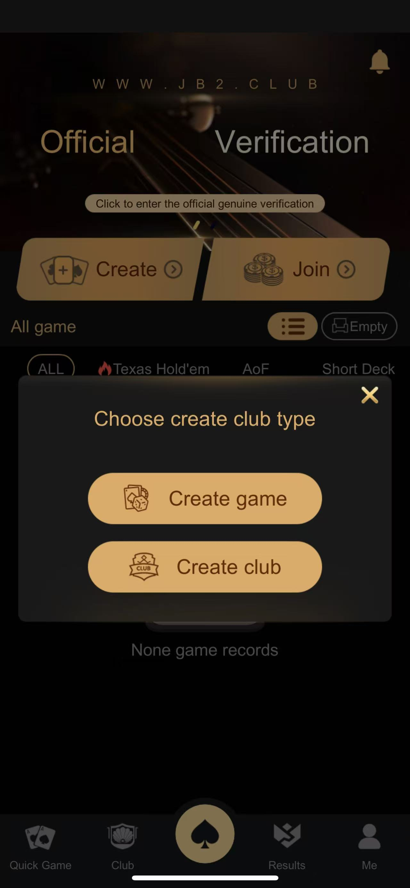
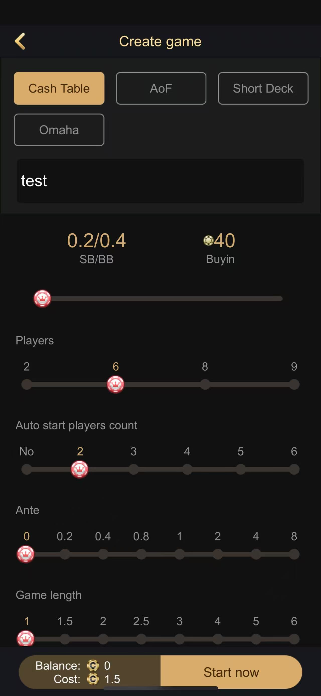
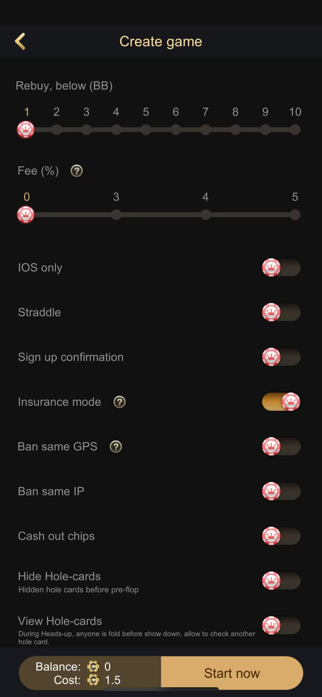
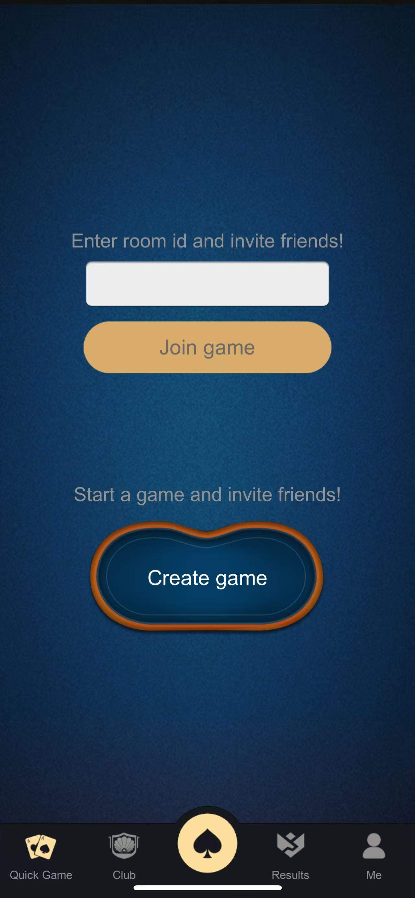
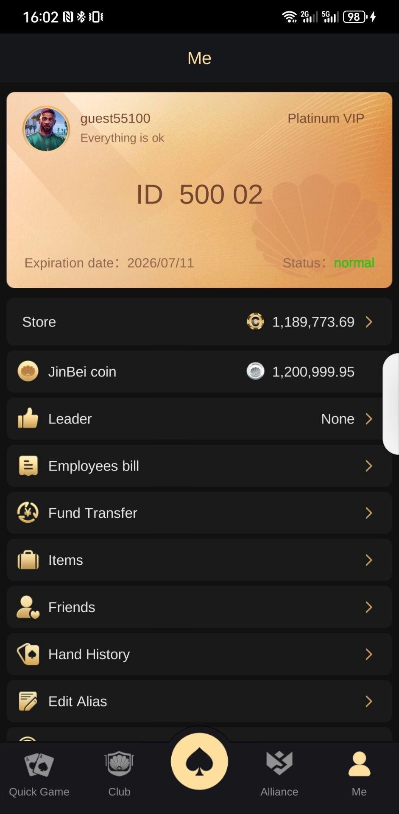
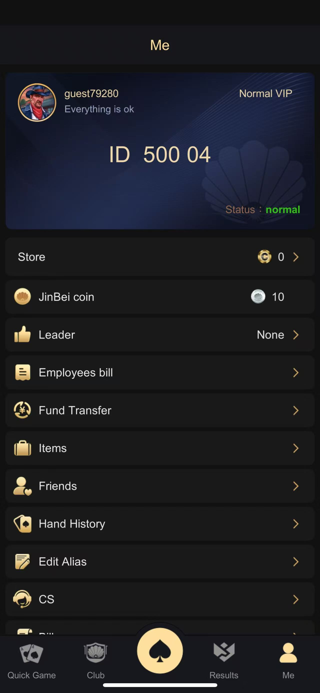
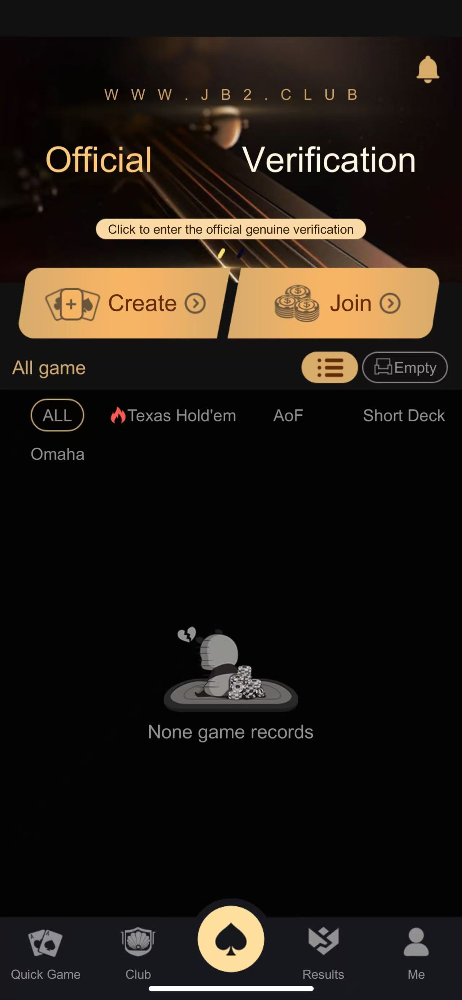
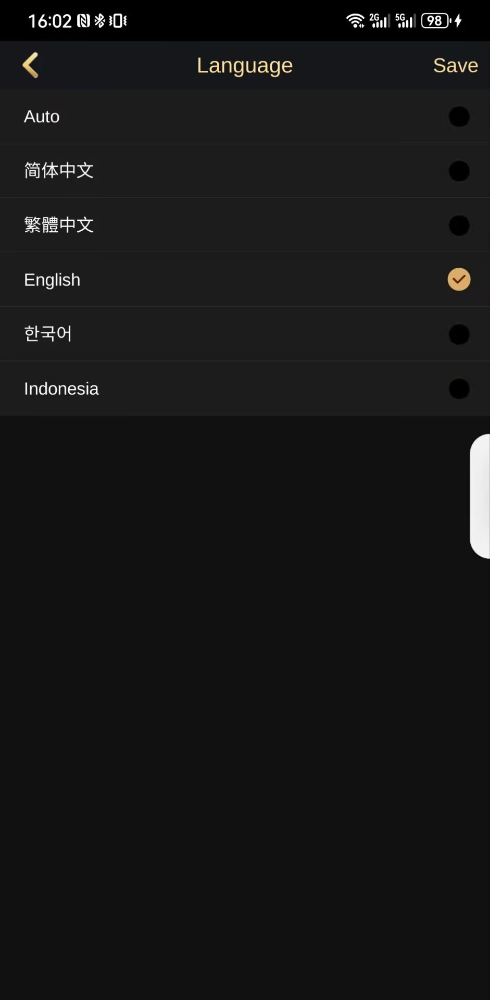

玩家狀態
上報、批次查詢、線上清單及狀態清理。
PushServer 負責多人俱樂部與私人牌局的玩家線上狀態、遊戲狀態、訊息路由及房間上報；產品截圖則展示其整合使用場景。
上報、批次查詢、線上清單及狀態清理。
玩家訊息、廣播、紅點及維護通知。
玩家集合、桌子資訊與線上統計。
提交玩家路由。
保存線上與遊戲狀態。
上報玩家和桌子。
按使用者雜湊。
推送狀態與廣播。








| 層級 | 內容 |
|---|---|
| 服務 | C++ Tars Application/Servant |
| 介面 | Push、線上、遊戲狀態及廣播協議 |
| 資料 | Tars MySQL 與 DBAgent |
| 運維 | 設定重載、狀態清理與維護通知 |
Makefile 依賴倉庫外的公共協議與模組，並含硬編碼部署資訊。建置前必須補齊相依並清理地址及憑據。